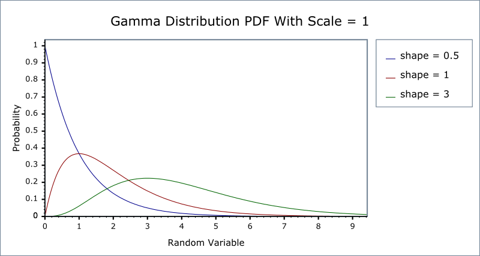
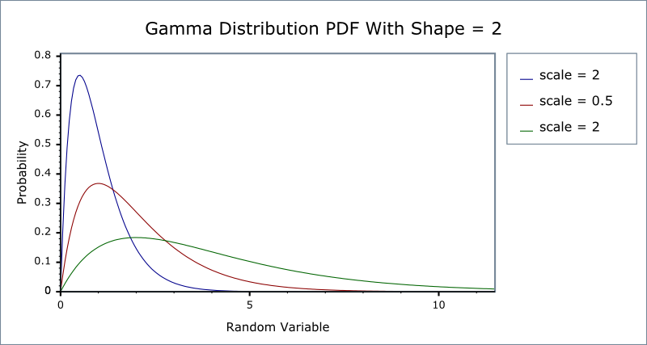

|
Home | Libraries | People | FAQ | More |


#include <boost/math/distributions/gamma.hpp>
namespace boost{ namespace math{ template <class RealType = double, class Policy = policies::policy<> > class gamma_distribution { public: typedef RealType value_type; typedef Policy policy_type; gamma_distribution(RealType shape, RealType scale = 1) RealType shape()const; RealType scale()const; }; }} // namespaces
The gamma distribution is a continuous probability distribution. When the shape parameter is an integer then it is known as the Erlang Distribution. It is also closely related to the Poisson and Chi Squared Distributions.
When the shape parameter has an integer value, the distribution is the Erlang distribution. Since this can be produced by ensuring that the shape parameter has an integer value > 0, the Erlang distribution is not separately implemented.
![[Note]](../../../../../../../../../doc/html/images/note.png) |
Note |
|---|---|
|
To avoid potential confusion with the gamma functions, this distribution does not provide the typedef:
typedef gamma_distibution<double> gamma;
Instead if you want a double precision gamma distribution you can use
boost::math::gamma_distribution<>
|
For shape parameter k and scale parameter θ it is defined by the probability density function:

Sometimes an alternative formulation is used: given parameters α= k and β= 1 / θ, then the distribution can be defined by the PDF:

In this form the inverse scale parameter is called a rate parameter.
Both forms are in common usage: this library uses the first definition throughout. Therefore to construct a Gamma Distribution from a rate parameter, you should pass the reciprocal of the rate as the scale parameter.
The following two graphs illustrate how the PDF of the gamma distribution varies as the parameters vary:


The Erlang Distribution is the same as the Gamma, but with the shape parameter an integer. It is often expressed using a rate rather than a scale as the second parameter (remember that the rate is the reciprocal of the scale).
Internally the functions used to implement the Gamma Distribution are already optimised for small-integer arguments, so in general there should be no great loss of performance from using a Gamma Distribution rather than a dedicated Erlang Distribution.
gamma_distribution(RealType shape, RealType scale = 1);
Constructs a gamma distribution with shape shape and scale scale.
Requires that the shape and scale parameters are greater than zero, otherwise calls domain_error.
RealType shape()const;
Returns the shape parameter of this distribution.
RealType scale()const;
Returns the scale parameter of this distribution.
All the usual non-member accessor functions that are generic to all distributions are supported: Cumulative Distribution Function, Probability Density Function, Quantile, Hazard Function, Cumulative Hazard Function, mean, median, mode, variance, standard deviation, skewness, kurtosis, kurtosis_excess, range and support.
The domain of the random variable is [0,+∞].
The lognormal distribution is implemented in terms of the incomplete gamma functions gamma_p and gamma_q and their inverses gamma_p_inv and gamma_q_inv: refer to the accuracy data for those functions for more information.
In the following table k is the shape parameter of the distribution, θ is it's scale parameter, x is the random variate, p is the probability and q = 1-p.
|
Function |
Implementation Notes |
|---|---|
|
|
Using the relation: pdf = gamma_p_derivative(k, x / θ) / θ |
|
cdf |
Using the relation: p = gamma_p(k, x / θ) |
|
cdf complement |
Using the relation: q = gamma_q(k, x / θ) |
|
quantile |
Using the relation: x = θ* gamma_p_inv(k, p) |
|
quantile from the complement |
Using the relation: x = θ* gamma_q_inv(k, p) |
|
mean |
kθ |
|
variance |
kθ2 |
|
mode |
(k-1)θ for k>1 otherwise a domain_error |
|
skewness |
2 / sqrt(k) |
|
kurtosis |
3 + 6 / k |
|
kurtosis excess |
6 / k |